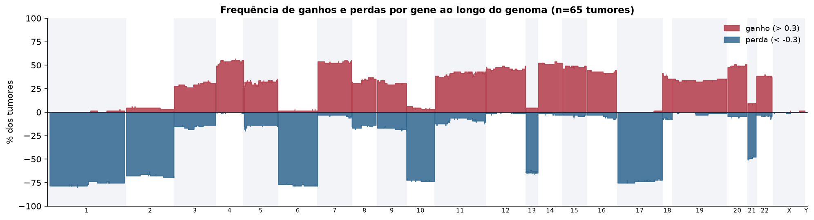
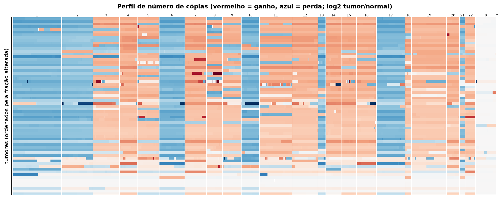
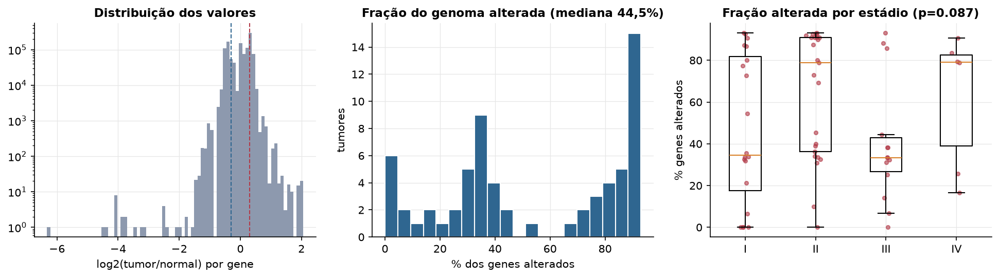
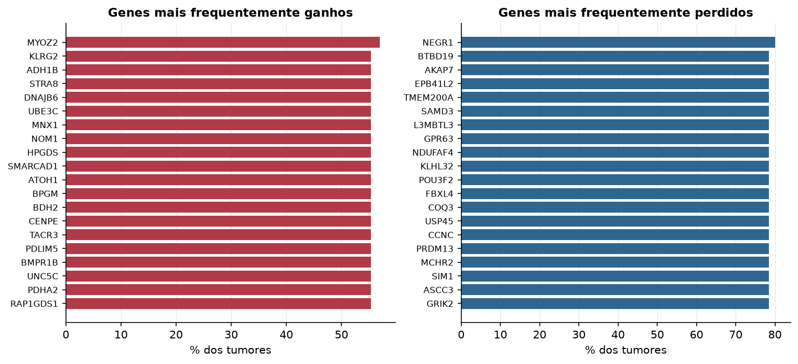

KICH · Número de cópias (CNV)
Affymetrix SNP6, segmentos whitelisted do PanCanAtlas · gerado em 21/10/2026 22:18
65tumores
17.738genes
44,5%fração alterada mediana
77segmentos/tumor (mediana)
Fonte: SNP6 whitelisted (PanCanAtlas); nível de gene calculado dos segmentos (hg19)
O valor por gene é o do segmento que cobre o meio do gene (log2 tumor/normal, hg19). Sem correção de pureza e ploidia: tumores com pouca célula tumoral têm valores atenuados. Para chamadas discretas (−2 a 2), use o GISTIC2 do PanCanAtlas ou o ABSOLUTE.
Principais resultados
- Mediana de 44,5% dos genes com ganho ou perda por tumor (limiares log2 de 0.3 e -0.3).
- O cromossomo com mais ganhos em média é o 7 (52,6% dos tumores por gene) e o com mais perdas é o 6 (77,4%).
- Genes mais ganhos: MYOZ2 (57%), KLRG2 (55%), ADH1B (55%), STRA8 (55%), DNAJB6 (55%), UBE3C (55%). Genes mais perdidos: NEGR1 (80%), BTBD19 (78%), AKAP7 (78%), EPB41L2 (78%), TMEM200A (78%), SAMD3 (78%).
- Fração alterada por estádio: Kruskal-Wallis p=0.087.
Paisagem ao longo do genoma


Carga de alterações

Genes recorrentes

Top 25 genes por frequência de ganho
| gene | chrom | % ganho | % perda | média log2 |
|---|---|---|---|---|
| MYOZ2 | 4 | 56.9 | 0 | 0.291 |
| KLRG2 | 7 | 55.4 | 3.1 | 0.29 |
| ADH1B | 4 | 55.4 | 0 | 0.283 |
| STRA8 | 7 | 55.4 | 3.1 | 0.297 |
| DNAJB6 | 7 | 55.4 | 4.6 | 0.274 |
| UBE3C | 7 | 55.4 | 4.6 | 0.274 |
| MNX1 | 7 | 55.4 | 4.6 | 0.274 |
| NOM1 | 7 | 55.4 | 4.6 | 0.274 |
| HPGDS | 4 | 55.4 | 0 | 0.283 |
| SMARCAD1 | 4 | 55.4 | 0 | 0.283 |
| ATOH1 | 4 | 55.4 | 0 | 0.283 |
| BPGM | 7 | 55.4 | 3.1 | 0.297 |
| BDH2 | 4 | 55.4 | 0 | 0.284 |
| CENPE | 4 | 55.4 | 0 | 0.284 |
| TACR3 | 4 | 55.4 | 0 | 0.284 |
| PDLIM5 | 4 | 55.4 | 0 | 0.283 |
| BMPR1B | 4 | 55.4 | 0 | 0.283 |
| UNC5C | 4 | 55.4 | 0 | 0.283 |
| PDHA2 | 4 | 55.4 | 0 | 0.283 |
| RAP1GDS1 | 4 | 55.4 | 0 | 0.283 |
| TSPAN5 | 4 | 55.4 | 0 | 0.283 |
| EIF4E | 4 | 55.4 | 0 | 0.283 |
| DHX15 | 4 | 55.4 | 0 | 0.293 |
| SOD3 | 4 | 55.4 | 0 | 0.293 |
| CCDC149 | 4 | 55.4 | 0 | 0.293 |
Top 25 genes por frequência de perda
| gene | chrom | % ganho | % perda | média log2 |
|---|---|---|---|---|
| NEGR1 | 1 | 0 | 80 | -0.383 |
| BTBD19 | 1 | 0 | 78.5 | -0.373 |
| AKAP7 | 6 | 1.5 | 78.5 | -0.38 |
| EPB41L2 | 6 | 1.5 | 78.5 | -0.38 |
| TMEM200A | 6 | 1.5 | 78.5 | -0.38 |
| SAMD3 | 6 | 1.5 | 78.5 | -0.38 |
| L3MBTL3 | 6 | 1.5 | 78.5 | -0.38 |
| GPR63 | 6 | 1.5 | 78.5 | -0.371 |
| NDUFAF4 | 6 | 1.5 | 78.5 | -0.371 |
| KLHL32 | 6 | 1.5 | 78.5 | -0.371 |
| POU3F2 | 6 | 1.5 | 78.5 | -0.371 |
| FBXL4 | 6 | 1.5 | 78.5 | -0.371 |
| COQ3 | 6 | 1.5 | 78.5 | -0.371 |
| USP45 | 6 | 1.5 | 78.5 | -0.371 |
| CCNC | 6 | 1.5 | 78.5 | -0.371 |
| PRDM13 | 6 | 1.5 | 78.5 | -0.371 |
| MCHR2 | 6 | 1.5 | 78.5 | -0.371 |
| SIM1 | 6 | 1.5 | 78.5 | -0.371 |
| ASCC3 | 6 | 1.5 | 78.5 | -0.371 |
| GRIK2 | 6 | 1.5 | 78.5 | -0.371 |
| HACE1 | 6 | 1.5 | 78.5 | -0.371 |
| LIN28B | 6 | 1.5 | 78.5 | -0.371 |
| BVES | 6 | 1.5 | 78.5 | -0.371 |
| POPDC3 | 6 | 1.5 | 78.5 | -0.371 |
| PREP | 6 | 1.5 | 78.5 | -0.371 |